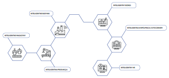

Starogardzka Polpharma będąca biznesowym zaczynem dzisiejszej Grupy Polpharma w czasie prywatyzacji miała 5% udziału w polskim rynku leków pod względem wartości, ale w regionie i na świecie nie liczyła się prawie zupełnie. Dzisiaj Polpharma jest największym producentem farmaceutyków w Polsce, ważnym graczem regionalnym i dwudziestą firmą generyczną świata. W raporcie analizujemy z czego wynika niewątpliwy sukces Polpharmy przekładający się na znaczący wpływ na rozwój polskiej gospodarki. Wskazujemy również najważniejsze wyzwania jakie stoją przed Polpharmą i polskim sektorem farmaceutycznym.
TEMATY RAPORTU
AUTORZY O RAPORCIE
Innowacje w sektorze farmaceutycznym
Innowacyjność przedsiębiorstw ma kluczowe znaczenie dla gospodarek krajowych. W Strategii na rzecz Odpowiedzialnego Rozwoju postrzega się ją jako jeden ze sposobów uzyskania trwałego wzrostu gospodarczego, który w dalekosiężnej perspektywie przyczyni się nie tylko do poprawy sytuacji materialnej mieszkańców Polski, ale też pozwoli zachować spójność społeczną, środowiskową i terytorialną.
Wysokość nakładów na Badania i Rozwój nie jest jedynym wskaźnikiem innowacyjności
Tradycyjnie za kluczowe wskaźniki innowacyjności uznaje się nakłady na badania i rozwój oraz liczbę patentów. W przypadku producentów farmaceutyków oba te wskaźniki trzeba analizować w szerszym kontekście. Liczba patentów może być tyleż wyrazem innowacyjności, co elementem przemyślanej strategii danego przedsiębiorstwa (Demirel, Mazzucato, 2012). W przypadku firm największych, dysponujących miliardowymi budżetami na rozwijanie molekuł wykorzystywanych do tworzenia terapii dla wąskich grup pacjentów lub chorób rzadkich, strategia ta polega na inwestowaniu w produkcję farmaceutyków, które można otoczyć później tzw. gąszczem patentowym, co pozwala na wieloletnie czerpanie zysków z pierwotnej inwestycji. Firmy o znaczeniu regionalnym, dysponujące mniejszymi, wielomilionowymi budżetami, muszą prowadzić wyważoną politykę patentową, tak aby kosztowne patenty nie stanowiły obciążenia dla firmy i odpowiednio przekładały się na zyski. Oznacza to fluktuację liczby patentów i utrzymywanie niektórych patentów tylko przez pewien czas.
Wydatki na B&R w polskim sektorze farmaceutycznym (mln zł)
Innowacyjność nie ogranicza się do wytwarzania leków oryginalnych
Kolejną pułapką jest niewłaściwe rozumienie innowacyjności w procesie wytwarzania leków. Potoczne rozumienie innowacji najczęściej sprowadza się do myślenia w kategoriach produktu końcowego. Innowacyjna firma to taka, która ma do zaproponowania unikat, będący przedmiotem zawiści konkurencji – to przekonanie pokutuje nawet wśród przedstawicieli kręgów biznesowych. Spłaszczona definicja innowacji prowadziłaby jednoznacznie do stwierdzenia, że producent leków równoważnych (generycznych), z natury rzeczy nie może w żaden sposób należeć do grona innowatorów, bo powiela jedynie to, co wymyślił i wdrożył prawdziwy wynalazca. To z gruntu błędny sposób myślenia. Innowacyjność równie często polega na wysiłku nieustannego ulepszania – tak produktu końcowego, jak procesów, które przyczyniły się do jego wytworzenia (OECD, 2005).
Nowatorskim kierunkiem rozwoju farmacji są leki określane mianem generycznych. Jest to dynamicznie rozwijający się i niejednorodny segment rynku leków.
W stronę Przemysłu 4.0.
W przypadku produkcji farmaceutycznej proces dostosowania do dzisiejszych standardów Przemysłu 4.0 zaczął się wcześniej niż w wielu innych sektorach – głównie za sprawą wysokich standardów bezpieczeństwa i parametrów jakości. Warto pamiętać, że postęp w obszarze technologii cyfrowych niesie ze sobą głęboką rewolucję w funkcjonowaniu przedsiębiorstw, prowadząc do powstania nowych modeli biznesowych. Nie chodzi już tylko o roboty zatrudnione do produkcji przemysłowej, systemy informacyjne w zarządzaniu i sieć internetową w komunikacji, lecz przede wszystkim o połączenia pomiędzy nimi. Tych zaś pojawia się coraz więcej dzięki wszechobecnym sensorom i wymianie danych. Żyjemy w czasach coraz intensywniejszego usieciowienia i „rozmawiania ze sobą” produktów, usług oraz całej gamy urządzeń (np. produkujących, kontrolujących, mierzących itp.). W minionych dziesięcioleciach wiele z nich działało osobno, lub było zintegrowanych tylko w wąskim zakresie. Tymczasem dzisiejszy świat staje się coraz bardziej połączeniem ludzi, przedmiotów i maszyn w tzw. Internecie rzeczy (Internet of Things).
Polpharma jest jedną z pierwszych firm w regionie, która zaczęła wdrażać komputerowe systemy usprawniające produkcję, logistykę, zarządzanie zasobami i integrację międzynarodową. Inwestycje w unowocześnione systemy technologiczne przyczyniają się do stymulacji działań innych polskich producentów, zwiększając konkurencyjność całej polskiej branży farmaceutycznej na rynku globalnym. W przypadku Polpharmy uwidacznia się również rola, jaką w procesie cyfryzacji każdej organizacji odgrywają tzw. e-liderzy: menedżerowie wyższego i średniego szczebla, którzy rozumieją wagę zmian, jakie nowe technologie wnoszą we wszystkie obszary funkcjonowania firmy.
Mariaż z biotechnologią
Produkcja leków biopodobnych, na którą stawia Polpharma, wymaga wysokiego zaawansowania technologicznego oraz dużych nakładów finansowych i organizacyjnych.
Nowy kierunek innowacji: leki biologiczne
Zdolność do budowania aliansów strategicznych zaowocowała dla firm farmaceutycznych zupełnie nowym kierunkiem innowacji: lekami biologicznymi tworzonymi we współpracy z firmami biotechnologicznymi. Wraz z decyzją o wejściu na rynek leków biologicznych Polpharma przesunęła się w stronę najbardziej zaawansowanych firm sektora, co łączy się z szeregiem nakładów finansowych i wyraźnym wysiłkiem zmiany funkcjonowania samego przedsiębiorstwa. Produkcja leków biopodobnych, na którą stawia Polpharma, jest równie zaawansowana i złożona, jak rozwój leku oryginalnego. W przypadku biologicznego leku referencyjnego do uzyskania produktu końcowego i wprowadzenia go na rynek potrzeba 10-14 lat, zaś orientacyjny koszt to około 800 mln dolarów. Leki biopodobne opracowuje się nieco krócej, około 7-10 lat, przy nakładach rzędu 100-200 mln dolarów. Obecnie Polpharma prowadzi pięć tego typu projektów: trzy w zaawansowanej fazie rozwoju, dwa we wczesnych fazach.
Wydatki Polpharmy na B&R związane z biotechnologią w mln zł
Bezpieczeństwo lekowe
W kontekście nadchodzących zmian demograficznych związanych ze starzeniem się społeczeństwa coraz większego znaczenia nabiera bezpieczeństwo lekowe kraju, które polega na zapewnieniu dostępu do niedrogich i dobrej jakości leków na powszechnie występujące choroby jak najszerszym grupom społecznym.
Coraz większa część społeczeństwa będzie doświadczała chorób przewlekłych związanych ze starzeniem się organizmu, takich jak nadciśnienie, choroby układu krążenia, choroby narządu wzroku i ruchu. Kluczową rolę w zapewnianiu bezpieczeństwa lekowego odgrywają leki generyczne (równoważne). Nie sposób umniejszać znaczenia produkcji leków oryginalnych, opartych o nowo pozyskane molekuły, jednak obecnie niemała jej część dotyczy chorób występujących stosunkowo rzadko. Z perspektywy bezpieczeństwa lekowego kraju, nieporównywalnie ważniejsze jest wspieranie dostępu do tanich i skutecznych leków na nadciśnienie, dotykające co czwartego Polaka, niż stymulowanie inwestycji w prace nad nowymi sposobami leczenia chorób rzadko występujących.
Grupy terapeutyczne, w których Polpharma jest liderem sprzedaży (%)
41 leków równoważnych z portfolio Polpharmy to leki, które nie posiadają zamienników. Zaangażowanie firmy w ich produkcję można uznać za przejaw swoistej odpowiedzialności społecznej – są to w większości leki niskomarżowe (firma czerpie z nich relatywnie mniejszy zysk).
Możliwości upowszechnienia terapii i obniżenia jej kosztów, jakie realnie otwiera produkcja generyczna, zostały dostrzeżone i docenione także w krajach wysokorozwiniętych. Najlepszym dowodem są tutaj polityki lekowe takich krajów jak Niemcy, czy Francja, gdzie aktywnie dąży się do zwiększenia udziału zamienników w rynku– w 2022 r. 80% wolumenu produkcji leków będą stanowiły właśnie leki generyczne.
Udział leków generycznych w całości rynku w krajach członkowskich UE (% wolumenu sprzedaży w 2014 r.)
Udział leków generycznych w wolumenie sprzedaży vs. w jej wartości w krajach członkowskich UE (%, 2014 r.)
Rozwój portfolio leków generycznych
Polpharma nie jest innowatorem sporadycznym. Sukcesywnie rosnące nakłady na badania i rozwój (w latach 2012-2015 stanowiły ponad 50% wydatków całego sektora farmaceutycznego w Polsce na ten cel) przekładają się systematycznie na nowe zgłoszenia patentowe.
Polpharma stale rozwija portfolio leków generycznych. Na przestrzeni ostatnich lat firma dokonała licznych innowacji produktowych potwierdzonych patentami, polegających na nowatorskich metodach syntezy, nowych sposobach aplikacji leku i bardziej ekologicznych sposobach produkcji. Polpharma wypracowała np. nowe połączenie substancji aktywnych pozwalające na zwiększenie efektywności terapii w postaci Metafenu (połączenie ibuprofenu i paracetamolu, rozwinięte w Polfie Łódź). Co istotne, Polpharma pracuje nad takimi lekami równoważnymi, które odpowiadają na potrzeby starzejącego się społeczeństwa. Warto odnotować, że jednym z pośrednich celów SOR jest motywowanie polskich firm do podejmowania ryzyka inwestycji w innowacyjność: podejmowania współpracy z innymi podmiotami, zwiększania nakładów na badania i rozwój oraz uczestnictwa w grantach badawczych. Dla wszystkich powyższych aktywności Polpharma może posłużyć jako inspirujący przykład, a także lider innowacyjności w sektorze produkcji biotechnologicznej i chemicznej.
Aktywne patenty Grupy Polpharma na substancje czynne w latach 1999-2016
Patenty Polpharmy w rozbiciu na zastosowanie medyczne i obszary obowiązywania patentu
Inwestycje w kapitał ludzki
Polpharma jest nie tylko największym producentem leków w Polsce, ale należy też do największych pracodawców sektora. Stabilny poziom zatrudnienia i lepsze jakościowo miejsca pracy to cele Strategii na Rzecz Odpowiedzialnego Rozwoju. Miejsca pracy wymagające lepszych kwalifikacji, w przedsiębiorstwach o większym potencjale innowacyjności i konkurencyjności to szczególny zasób, przekładający się na zarobki także w innych, mniej zaawansowanych technologicznie branżach. Najlepiej płatne zawody „ciągną” za sobą także te relatywnie gorzej opłacane, przyczyniając się tym samym do poprawy ogólnej sytuacji społecznej i jakości życia.
Dla rozwoju polskiej gospodarki kluczowe jest tworzenie popytu na miejsca pracy wymagające wysokich kwalifikacji, podobnie jak lepsze wykorzystanie kapitału ludzkiego. Wynagrodzenie oferowane przez Polpharmę jest średnio o 12% wyższe niż płaca w sektorze (w latach 2013-2016). Polpharma zatrudnia też relatywnie więcej pracowników odpowiedzialnych za badania i rozwój, a ich płace są jeszcze wyższe (w 2015 r. średnie wynagrodzenie pracowników tej grupy było o ponad 50% wyższe niż przeciętna płaca w sektorze). Co roku zatrudnienie w Polpharmie znajduje średnio 400 osób (dane dla lat 2015-2016).
Wynagrodzenia w grupie Polpharma na tle sektora (w zł)
Polpharma przywiązuje dużą wagę do zatrzymywania dotychczasowych pracowników i przyciągania nowych talentów poprzez rozbudowany system szkoleń. W 2012 roku przeznaczyła na ten cel 1,2 mln zł, a w 2016 roku niemal 4,5 mln zł. Od 2012 roku Grupa przeznaczyła na szkolenia i finansowanie studiów podyplomowych i doktoranckich w sumie ponad 17 mln zł
Wydatki Polpharmy na szkolenia (mln zł)
Polpharma na rynkach globalnych
Dynamika rozwoju rynku leków równoważnych zarówno w kraju, jak i za granicą, ma kluczowe znaczenie dla rynku farmaceutycznego. Globalny trend wzrostu handlu tymi lekami tworzy szerokie możliwości ekspansji także przed polskimi producentami farmaceutycznymi.
Polpharma wykorzystuje te możliwości w największym stopniu. To jedna z niewielu polskich firm farmaceutycznych, która odnotowuje przewagę eksportu nad importem i tym samym wyróżnia się pozytywnie na tle polskiego sektora, który cechuje wysoka importochłonność, a co za tym idzie – deficyt handlowy. Strategia eksportowa Grupy Polpharma wynika z rozpoznania korzystnych kierunków ekspansji handlowej. Na przesyconych rynkach europejskich firma wchodzi w alianse strategiczne z lokalnymi firmami. Natomiast głównym kierunkiem eksportowym są rynki wschodnie, na których Polpharma cieszy się wieloletnią renomą. Szczególnie dobrze widać to na przykładzie Rosji: co piąty artykuł przemysłowy sprzedawany do tego kraju przez polskie przedsiębiorstwo został wyprodukowany przez Polpharmę. Grupa Polpharma dominuje również strukturę polskiego eksportu do takich krajów jak Armenia, Azerbejdżan, Turkmenistan, Kirgistan i Uzbekistan. Farmaceutyki Polpharmy stanowią też niemal połowę eksportu do Albanii i trzecią część eksportu do Białorusi. Polpharma konsekwentnie rozwija także swoją obecność na rynkach południowo-azjatyckich w Wietnamie i Laosie.
Eksport Grupy Polpharma 2015 r. (zł)
Polpharma swoją obecność na danym rynku uzależnia od jego potencjału w obszarze leków generycznych. Przyjmuje strategie inwestycji bezpośrednich na rynkach o wysokim potencjale, takich jak Rosja i Kazachstan, gdzie popiera akwizycje i połączenia z partnerami lokalnymi i posiada własne zakłady produkcyjne leków. Z tych krajów prowadzi eksport leków do krajów ościennych tradycyjnie powiązanych handlowo. W mniejszych rozwijających się rynkach Polpharma przyjmuje strategię rozwoju sprzedaży w oparciu o własne przedstawicielstwa handlowe lub lokalnych dystrybutorów leków eksportowanych z Polski. Taka strategia rozwoju gwarantuje Polpharmie elastyczność działania i zapewnia osiąganie wzrostu sprzedaży leków.
Wnioski z raportu